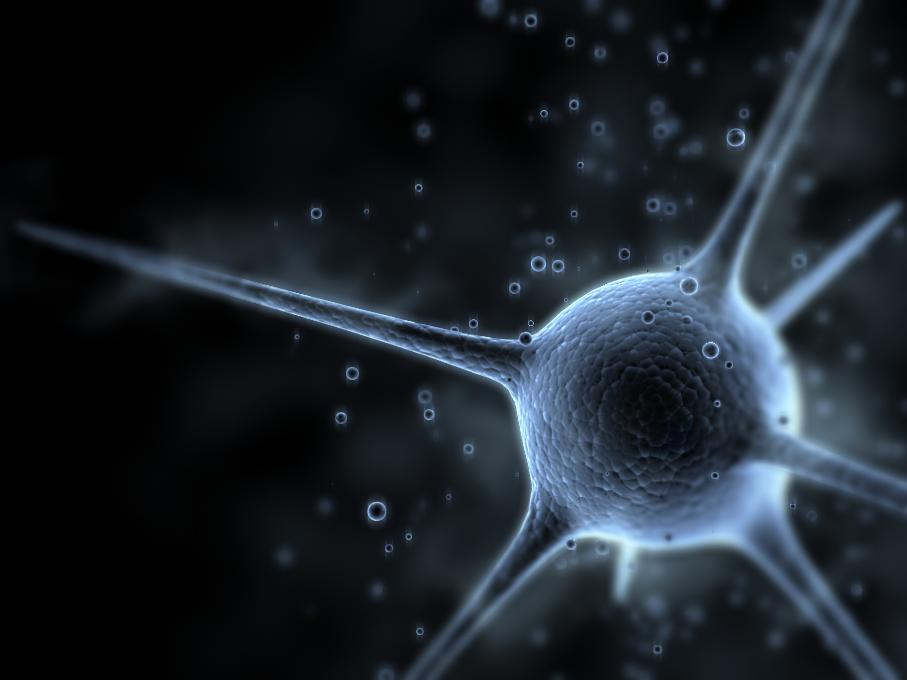
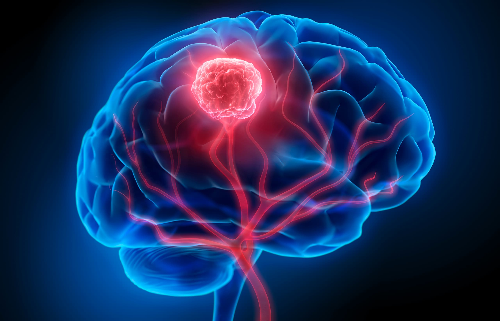

Neurological Disorders Overview
Neurological disorders are complex medical conditions affecting the brain, spinal cord, and nervous system, profoundly impacting an individual's quality of life.
Key Characteristics
- Diverse origins including genetic, environmental, and physiological factors
- Impact cognitive, motor, and sensory functions
- Often progressive, requiring comprehensive management
- Significant effects on physical and mental health

Brain Tumor
An abnormal cell growth in the brain that can be benign or malignant, detected through advanced diagnostic technologies.
Types
- Primary Tumors: Brain-originating
- Secondary Tumors: Metastatic from other body parts
- Benign: Slow-growing, less invasive
- Malignant: Aggressive, rapid growth
Diagnostic Methods
- Advanced MRI and CT Scans
- PET Scan Analysis
- Comprehensive Biopsy
- Precision Neurological Examination
.jpg)
Dementia
A syndrome characterized by progressive cognitive decline affecting memory, thinking, and daily functioning.
Types
- Alzheimer's Disease
- Vascular Dementia
- Lewy Body Dementia
- Frontotemporal Dementia
Management Strategies
- Targeted Medication
- Cognitive Stimulation
- Behavioral Interventions
- Personalized Care Plans
Epilepsy
A chronic neurological disorder characterized by recurrent, unprovoked seizures due to abnormal brain electrical activity.
Seizure Types
- Focal Seizures
- Generalized Seizures
- Absence Seizures
- Tonic-Clonic Seizures
Treatment Approaches
- Anti-Epileptic Medications
- Surgical Interventions
- Dietary Therapies
- Lifestyle Management